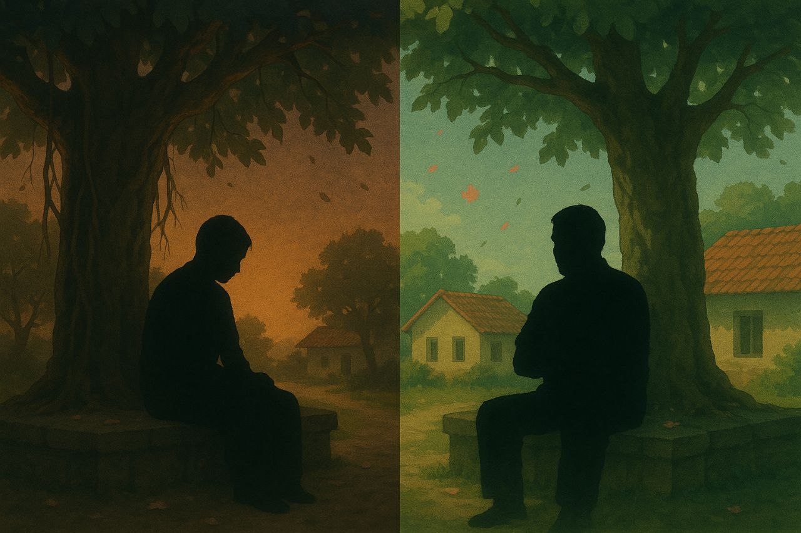

சில நேரங்களில் சில மனிதர்கள்

சில நேரங்களில் சில மனிதர்கள் என்பதன் ஆழத்தை வாழ்க்கையில் நாம் ஏற்கனவே உணர்ந்திருக்கலாம். மனித வாழ்வில் மக்கள், நட்பு, குடும்பம் ஆகியவை மூன்று முக்கிய தளங்கள். சில நேரங்களில் நம்மை மாற்றி அமைக்கும் சில மனிதர்கள் – அவர்கள் ஒரு பயணத்தில் ஓரமாய் தோன்றியவாறு மறைந்து போகலாம், ஆனால் அவர்கள் தாக்கம் நம்முள் என்றும் வாழும். மக்கள் எனப்படுவது வெறும் பரிச்சயமற்ற கூட்டம் அல்ல; ஒருவரின் ஒரு வார்த்தை, ஒரு செயல் நம்மை ஊக்குவிக்கலாம்.
நட்பு என்பது உறவுகளுக்குப் பின் வரும் உண்மையான நிழல் – அவர்கள் இல்லாத வாழ்வில் சுவையே இருக்காது. உண்மையான நண்பன், நாம் விழும் நேரங்களில் பேசாமல் கை கொடுப்பான். அதே நேரத்தில், குடும்பம் என்பது நம் அடையாளமும் ஆதாரமும். தோல்வி வந்தபோதும், நம்மை மீண்டும் தூக்கிக் கொள்வதற்கான முதல் கை குடும்பத்திலிருந்து தான் வரும். இம்மூன்றும் சேர்ந்தே ஒரு மனிதனை முழுமையாக்குகின்றன. சில மனிதர்கள் சில நேரங்களில் நம்மைச் சந்திக்கிறார்கள்; அவர்களின் வருகை நம்மை சீராக மாற்ற, ஆழமாக சிந்திக்கவும் செய்கின்றது. வாழ்க்கையின் அடுத்த கட்டத்திற்கு இட்டுச் செல்லும் அந்த நிமிடங்களை, அந்த நபர்களை நம்முள் என்றும் நிறைவாக நினைவுகூர்வதே உண்மையான மனிதத்தன்மை.